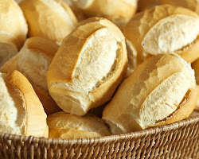
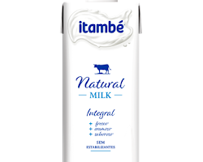

PÃES TRADICIONAIS
Pão Sovado:
Perfeito para qualquer ocasião, nosso pão sovado é macio, saboroso e com aquela casquinha crocante que você adora.
M - R$5,00 | G - R$10,00
Pão de Sal:
Crocante por fora e macio por dentro, nosso pão de sal é ideal para o seu lanche da manhã ou da tarde. Feito com ingredientes frescos e de alta qualidade, para garantir um sabor irresistível.
M - R$3,00 | G - R$6,00
Pão Francês:
Crocante e dourado, nosso pão francês é perfeito para acompanhar suas refeições ou para fazer deliciosos sanduíches.
M - R$2,00 | G - R$4,00
Baguete:
Longa e fina, nossa baguete é ideal para fazer sanduíches gourmet ou para servir com patês e queijos.
UN - R$8,00
PÃES ESPECIAIS
Doce Carioca:
Um pedacinho do Rio de Janeiro em sua mesa! Saboreie o tradicional doce carioca, feito com leite condensado, coco ralado e manteiga, e se apaixone pelo seu sabor irresistível!
M - R$5,50 | G - R$11,00
Pão de Queijo:
Quentinho e saboroso, nosso pão de queijo é feito com queijo polvilho de alta qualidade, garantindo um sabor irresistível.
UN - R$4,00
Pão Integral:
Rico em fibras e com um sabor marcante, nosso pão integral é ideal para quem busca uma alimentação mais saudável.
M - R$6,00 | G - R$12,00
Pão de Fubá:
Com um sabor único e textura macia, nosso pão de fubá é feito com fubá de qualidade e ingredientes frescos.
M - R$5,50 | G - R$11,00
Pão Doce:
Feito com frutas secas e castanhas, nosso pão doce é perfeito para um lanche da tarde ou para acompanhar um café.
M - R$6,00 | G - R$12,00
LÍQUIDOS
Leite Natural:
Para começar o dia com energia e saúde, oferecemos leite natural fresquinho direto da fazenda.
L - R$5,00 | G - R$10,00
Café Fresquinho:
Perfeito para acompanhar seu pão ou para uma pausa relaxante, nosso café é feito com grãos selecionados e moídos na hora.
Xícara - R$3,00 | Copo americano - R$5,00
BOLOS TRADICIONAIS
Bolo de Fubá:
Um clássico brasileiro, nosso bolo de fubá é feito com fubá de qualidade, leite fresco, ovos e açúcar, resultando em um bolo macio, úmido e com um sabor irresistível.
R$25,00
Bolo de Cenoura com
Cobertura de Chocolate:
Um bolo fofinho e saboroso, feito com cenoura fresca, especiarias e uma deliciosa cobertura de chocolate.
R$30,00
Bolo de Chocolate:
Perfeito para os amantes de chocolate, nosso bolo de chocolate é feito com cacau em pó de alta qualidade, ovos, manteiga e açúcar, resultando em um bolo rico, úmido e com um sabor intenso de chocolate.
R$28,00
Bolo de Laranja:
Leve e refrescante, nosso bolo de laranja é feito com suco de laranja fresco, raspas de laranja, ovos e açúcar, resultando em um bolo aromático e saboroso.
R$25,00
BOLOS ESPECIAIS
Red Velvet:
Um bolo clássico americano, nosso bolo Red Velvet é feito com cacau em pó, buttermilk, vinagre branco e corante vermelho, resultando em um bolo macio, úmido e com um sabor único.
R$35,00
Bolo de Leite Ninho:
Perfeito para os fãs de chocolate branco, nosso bolo de Leite Ninho é feito com leite em pó Ninho, leite condensado, ovos e manteiga, resultando em um bolo cremoso, doce e com um sabor irresistível.
R$32,00
Bolo de Abacaxi:
Um bolo tropical e refrescante, nosso bolo de abacaxi é feito com abacaxi fresco, leite condensado, ovos e manteiga, resultando em um bolo úmido, saboroso e com um toque cítrico.
R$28,00
Bolo de Paçoca:
Um bolo tipicamente brasileiro, nosso bolo de paçoca é feito com farinha de mandioca, amendoim triturado, leite condensado, ovos e manteiga, resultando em um bolo crocante por fora e macio por dentro, com um sabor único de paçoca.

R$30,00
Na Pãoraíso, a padaria do Zezão, você pode ter certeza de que:
- Seus pães favoritos sempre fresquinhos: Nossos pães são feitos com ingredientes frescos e de alta qualidade, e assados no dia em que você compra.
- Atendimento atencioso e personalizado: Nossa equipe está sempre pronta para atender você com atenção e simpatia, ajudando-o a encontrar o pão perfeito para suas necessidades.
- Preços justos e transparentes: Nossos preços são fixos e transparentes, para que você possa ter certeza do que está pagando.
- Um ambiente acolhedor e familiar: Nossa padaria é um ambiente acolhedor e familiar, onde você pode se sentir em casa.
- Você também pode encomendar bolos personalizados para aniversários, casamentos, festas e outras ocasiões especiais. Entre em contato conosco com antecedência para fazer seu pedido. Na Pãoraíso, a padaria do Zezão, você encontra bolos caseiros para todos os gostos!
Venha experimentar os nossos deliciosos pães e se apaixone pelo sabor!
Observações:
- M - Tamanho médio
- G - Tamanho grande
- UN - Unidade
- L - Litro
- Xícara - 150 ml
- Preços anexados a bolos são aqueles pagos por cada bolo, já que bolos são contáveis